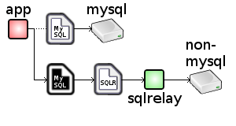
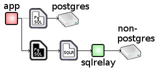

Solves - "I wrote my app using the native MySQL API but the company is migrating to Oracle. I can tweak the queries to work with Oracle but I really don't want to have to modify the app to use OCI."
The SQL Relay Drop-In Replacement Libraries are shared-object libraries that can be LD_PRELOAD'ed to take the place of the native MySQL/MariaDB or PostgreSQL client libraries.
Many apps that were written to use MySQL/MariaDB or PostgreSQL dynamically load a client library to talk to the database.
The SQL Relay Drop-In Replacement Libraries intercept the native client library calls, map them to the SQL Relay equivalents and aim the client at an SQL Relay server.
 
This can be used to aim an app that was written to use MySQL/MariaDB or PostgreSQL at a different database or just allow an app to continue to use the MySQL/MariaDB or PostgreSQL database but take advantage of SQL Relay features such as connection pooling, load balancing, query routing and throttling without modification.